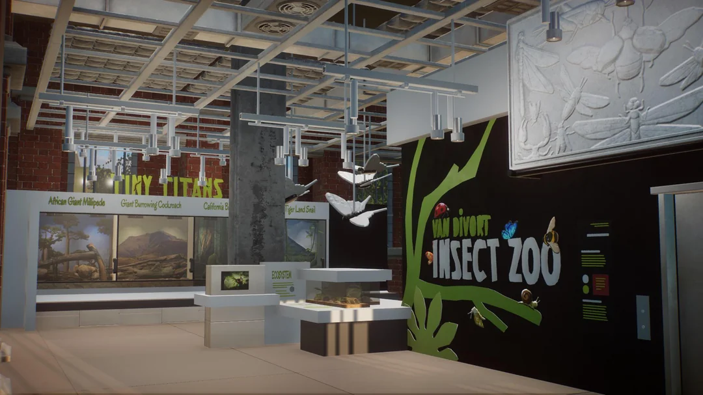

INSECT HOUSE
Step into our Insect House and experience the fascinating world of nature’s smallest architects, warriors, and survivors. This vibrant exhibit showcases an incredible variety of insects from around the world, each playing a vital role in ecosystems both near and far. From delicate wings to armored shells, prepare to be amazed by the complexity and beauty of these tiny creatures.
What is on the show?
- Leafcutter Ants – Watch them form living highways as they carry leaf pieces back to their underground fungus farms.
- Goliath Beetle – One of the largest beetles in the world, known for its striking armor-like shell
- Praying Mantis – A master ambush predator with lightning-fast reflexes and deadly precision
- Atlas Moth – With wingspans up to 30 cm, this gentle giant is often mistaken for a bird at first glance
- Giant African Millipede – A peaceful decomposer with hundreds of legs, helping recycle the forest floor
WHERE WILL YOU FIND IT?
The amphitheatre is to the west of the main entrance.e